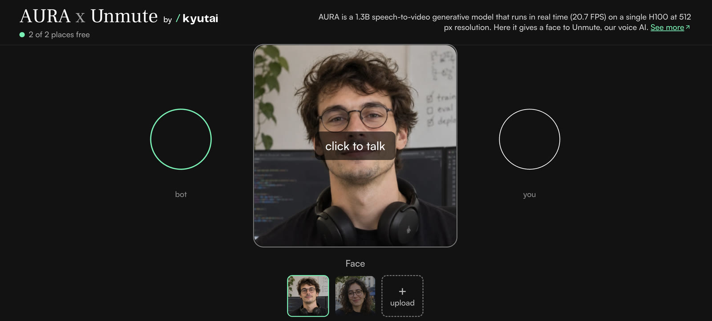
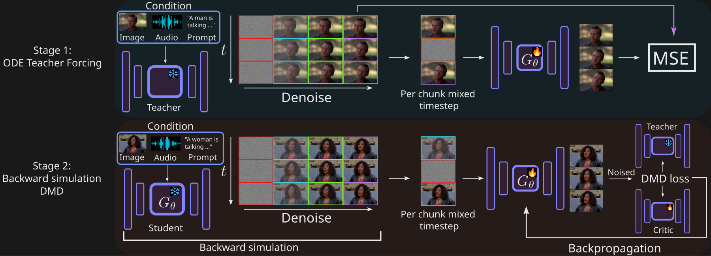
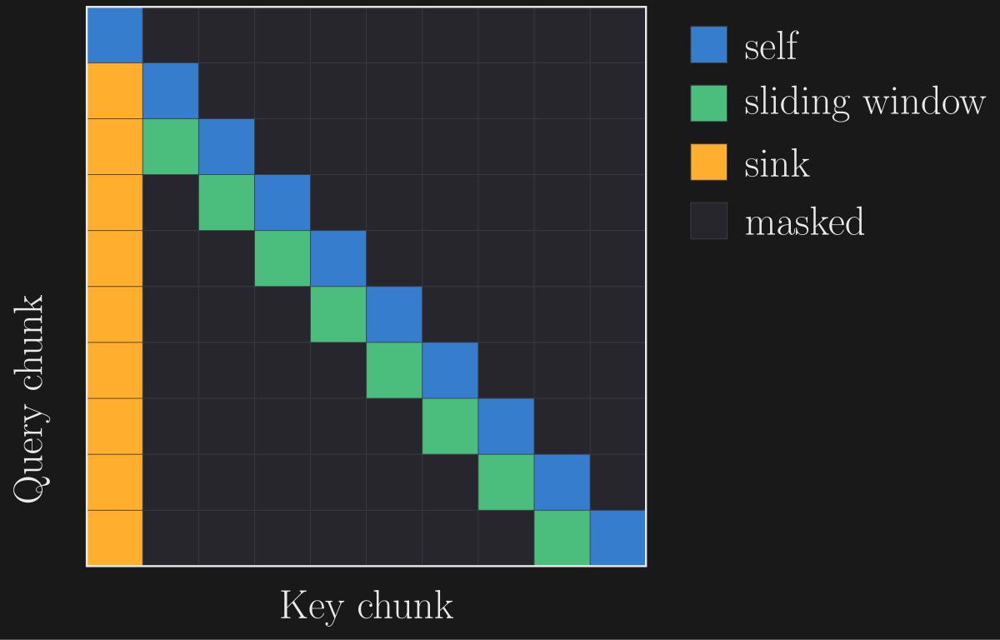
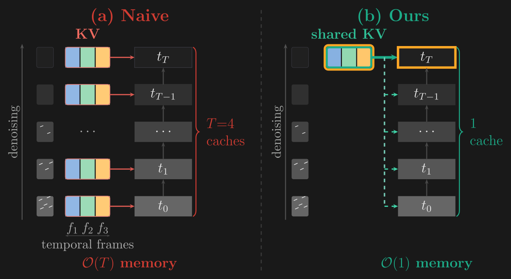

Streaming, causal, few-step audio-driven talking-head video generation, in real time on a single GPU.
1Kyutai · 2Sorbonne Université, ISIR · 3Work done while at Kyutai
AURA distills 50-step bidirectional speech-to-video teachers into 4-step causal students that stream talking-head video chunk by chunk with a rolling KV cache, with no audio look-ahead. It comes in two sizes: AURA 1.3B runs in real time on a single GPU (576p, 20.7 FPS for 16 Hz playback, 23× faster than its teacher), and AURA 5B streams 720p at 9.7 FPS, matching its TalkVerse teacher at 17× the speed.
Live demo
AURA 1.3B gives a face to Unmute, Kyutai's voice AI. Pick a face (or upload your own), click to talk, and the avatar is generated live from Unmute's speech, in real time on a single H100 GPU.

Try it at aura.kyutai.orgThe AURA × Unmute interface. How the demo works ↓
Figure 1. AURA streams talking-head video chunk by chunk on a single GPU: AURA 1.3B at 576p in real time (20.7 FPS for 16 Hz playback), AURA 5B at 720p and 9.7 FPS. Samples generated from the same speech audio with different reference identities and text prompts; switch model above.
Abstract
Current audio-driven video diffusion models can synthesize realistic talking-head videos but generally require dozens of diffusion denoising steps over multi-second video chunks, making them unsuitable for streaming applications such as voice assistants and virtual avatars, where low-latency and online causal generation are required properties. AURA generates video chunk by chunk with a rolling KV cache, requiring only the audio of the current chunk to start generating, rather than a multi-second audio look-ahead like bidirectional models. It comes in two sizes: AURA 1.3B streams 576p video in real time on a single GPU (20.7 fps for a 16 Hz playback rate), making it suited to interactive avatar applications, and AURA 5B streams 720p video at 9.7 fps. Our two-stage distillation pipeline first aligns the causal student with the teacher, by training it to match the teacher's trajectories with fewer diffusion steps and a chunk-wise sliding window causal attention mask, then applies Distribution Matching Distillation (DMD) with backward simulation to close the remaining quality gap. On standard talking-head benchmarks, AURA 1.3B runs 23× faster than its own bidirectional teacher and reaches a quality comparable to TalkVerse at a lower resolution, and AURA 5B matches its TalkVerse teacher at 720p while running 17× faster. To support reproducibility and further research on streaming avatar generation, we release the weights of both models along with a dataset of 30K synthetic videos and their precomputed teacher trajectories.
Method

static/images/method.pngFigure 2. Two-stage distillation pipeline. Stage 1 (ODE teacher forcing) regresses the causal student onto the frozen teacher's multi-step ODE trajectory. Stage 2 (backward-simulation DMD) unrolls the student without gradients, then matches teacher and critic scores on the student's own trajectory.
Three modifications turn a 50-step bidirectional teacher into a 4-step causal student: block-wise causal attention over chunks of 4 latent frames (Figure 3a), no motion-frame conditioning (the KV cache already carries temporal context), and per-chunk mixed diffusion timesteps (Figure 2, bottom middle). AURA 5B is distilled from TalkVerse (5B). AURA 1.3B is distilled from a 1.3B teacher that we train with the TalkVerse pipeline on Wan2.1 1.3B, with audio features from the streaming Mimi codec instead of Wav2Vec2.
Stage 1 regresses the student onto its teacher's ODE trajectories (30K clips per model) via MSE. Stage 2 applies Distribution Matching Distillation with backward simulation — training on the student's own rollout states — to close the remaining few-step quality gap (Figure 2). Each stage trains its own LoRA adapters; the Stage 1 LoRA is merged before Stage 2.
The student streams one chunk at a time with 4 denoising steps. Mixed-timestep training lets each past chunk be cached once (Figure 3b); a rolling window keeps only a fixed identity anchor (first chunk) and the most recent chunk, giving constant memory regardless of video length (Figure 3a). RoPE positions are re-indexed so that they stay within the range seen in training on unbounded streams.

static/images/fig_mask.pngFigure 3(a). Sliding-window causal attention mask (training). Each chunk of 4 latent frames attends to itself, the preceding chunk, and the initial chunk as an attention sink.

static/images/fig_kvcache.pngFigure 3(b). KV caching with and without per-chunk mixed timesteps: naive caching scales memory with the number of denoising steps T; mixed-timestep training shares one cache across all steps (O(1) memory).
Results
Samples from the HALLO3 Test and CelebV-HQ Test benchmarks. Both models are driven by the same references and audio, tile by tile. Press play on any clip to watch it with audio.
results_13b/01.mp4results_13b/02.mp4results_13b/03.mp4results_13b/04.mp4results_13b/05.mp4results_13b/06.mp4results/01.mp4results/02.mp4results/03.mp4results/04.mp4results/05.mp4results/06.mp4Comparisons
AURA 1.3B and AURA 5B vs. the TalkVerse teacher (5B, 50-step) and prior streaming/non-causal baselines. Playback is synchronized across all methods. Switch test set and sample below.
All methods share the same driving audio; unmute plays the reference track. Under each method: end-to-end throughput on a single H100 GPU (Table 1).
Quantitative
FID, FVD and JEDi (visual quality; FVD/JEDi averaged over three temporal offsets to probe inter-chunk discontinuities), Sync-C/D (lip-sync), CSIM (identity via ArcFace), and warping error (WE, temporal consistency via RAFT). All fps on a single H100 GPU. AURA 1.3B, Wan-S2V and Live Avatar play back at 16 Hz, the other methods at 25 Hz, so FVD and JEDi (16-frame windows) are only approximately comparable across rates. Bold: best; underlined: second best.
Figure 4. Quality–speed trade-off across audio-driven avatar models: FVD and JEDi (lower is better) vs. end-to-end generation time for 10s of video on a single H100 (log scale), averaged over the HALLO3 and CelebV-HQ test sets. Bubble area is proportional to model parameter count; the shaded band marks real-time generation. AURA matches multi-step baselines at a fraction of their generation time, and AURA 1.3B is the only model in the real-time band.
Table 1 — HALLO3 Test (100 clips, 10s, real English speech)
| Method | Params | Res | Steps | DiT/VAE fps ↑ | Total fps ↑ | FID ↓ | FVD ↓ | JEDi ↓ | CSIM ↑ | Sync-C ↑ | Sync-D ↓ | WE ↓ |
|---|---|---|---|---|---|---|---|---|---|---|---|---|
| Hallo3 | 14.5B | 480p | 50 | 0.24/3.2 | 0.22 | 42.8 | 183.4 | 0.180 | 0.74 | 5.06 | 9.9 | 0.0036 |
| Wan-S2V | 14B | 720p | 40 | 0.08/6.7 | 0.08 | 57.7 | 196.4 | 0.257 | 0.71 | 5.42 | 9.0 | 0.0032 |
| TalkVerse (teacher) | 5B | 720p | 50 | 0.69/7.4 | 0.58 | 58.5 | 210.8 | 0.398 | 0.74 | 3.82 | 10.5 | 0.0019 |
| Live Avatar | 14B | 480p | 4 | 8.4/4.3 | 1.9 | 52.0 | 181.1 | 0.442 | 0.77 | 4.90 | 9.3 | 0.0039 |
| AURA 5B (ours) | 5B | 720p | 4 | 19.7/22.7 | 9.7 | 56.9 | 195.5 | 0.313 | 0.79 | 4.30 | 9.87 | 0.0032 |
| AURA 1.3B (ours) | 1.3B | 576p | 4 | 28.8/96.9 | 20.7 | 56.8 | 177.1 | 0.403 | 0.84 | 4.07 | 9.93 | 0.0036 |
Table 2 — CelebV-HQ Test (150 clips, 8–20s, TTS-synthesized speech)
| Method | Params | Res | Steps | DiT/VAE fps ↑ | Total fps ↑ | FID ↓ | FVD ↓ | JEDi ↓ | CSIM ↑ | Sync-C ↑ | Sync-D ↓ | WE ↓ |
|---|---|---|---|---|---|---|---|---|---|---|---|---|
| Hallo3 | 14.5B | 480p | 50 | 0.24/3.2 | 0.22 | 39.1 | 202.5 | 0.243 | 0.71 | 6.23 | 9.4 | 0.0038 |
| Wan-S2V | 14B | 720p | 40 | 0.08/6.7 | 0.08 | 50.4 | 289.6 | 0.577 | 0.62 | 6.24 | 8.9 | 0.0061 |
| TalkVerse (teacher) | 5B | 720p | 50 | 0.69/7.4 | 0.58 | 53.2 | 255.9 | 0.582 | 0.59 | 4.78 | 10.5 | 0.0059 |
| Live Avatar | 14B | 480p | 4 | 8.4/4.3 | 1.9 | 52.4 | 267.5 | 1.010 | 0.67 | 5.90 | 9.2 | 0.0057 |
| AURA 5B (ours) | 5B | 720p | 4 | 19.7/22.7 | 9.7 | 54.0 | 208.1 | 0.320 | 0.72 | 4.94 | 10.0 | 0.0043 |
| AURA 1.3B (ours) | 1.3B | 576p | 4 | 28.8/96.9 | 20.7 | 51.5 | 248.8 | 0.574 | 0.77 | 4.76 | 10.1 | 0.0046 |
With 4 denoising steps instead of 50, AURA matches or improves on its TalkVerse teacher across most automatic metrics, and is comparable to the much larger Wan-S2V (14B, multi-step) on FVD, JEDi and audio–visual alignment. Both AURA models have the best identity preservation (CSIM) of all methods on both test sets. AURA 1.3B obtains the best FVD on HALLO3 Test (177.1) at an FID on par with AURA 5B, but is behind on lip-sync. Both are faster than all baselines: AURA 5B runs at 9.7 fps end-to-end, a 17× speedup over TalkVerse (30× on the diffusion transformer alone), and AURA 1.3B at 20.7 fps, faster than its 16 Hz playback — real time on a single H100, 23× faster than its own bidirectional teacher (17.3 fps at 768×512, still real time). While Hallo3 tops FID and JEDi on both test sets, qualitative inspection (supplementary material of the paper) shows it produces exaggerated mouth motion and recurrent hand artifacts that these distribution-based metrics fail to flag.
User study
To assess perceived quality directly, we run an anonymous human evaluation on the Mabyduck platform: 400 pairwise comparisons from 27 raters on the 100 HALLO3 Test clips, covering all pairs among AURA 5B, AURA 1.3B, Hallo3 and the TalkVerse teacher, along four axes — overall visual quality, lip-sync, reference fidelity, and naturalness — aggregated into per-axis Bayesian Elo scores (Figure 5). Both AURA models are preferred over Hallo3 on all four axes, confirming that Hallo3's distribution-metric lead does not translate into perceived quality. Against the non-causal, 50-step teacher, AURA 5B ranks higher on reference fidelity and is on par on visual quality, lip-sync and naturalness — despite being causal and 17× faster. AURA 1.3B also ranks above the teacher on reference fidelity, but below AURA 5B and the teacher on visual quality, which reflects its lower resolution, as well as on lip-sync and naturalness.
Figure 5. Human preference study: per-axis Bayesian Elo (↑) from 400 pairwise comparisons by 27 raters between AURA 5B, AURA 1.3B, TalkVerse and Hallo3 on the HALLO3 Test clips; error bars are 95% CIs.
Long-form streaming stability
Figure 6. FVD, CSIM and Sync-C per 10s segment over 60s of streaming, averaged over the 100 HALLO3 Test references.
| Metric | 0–10s | 10–20s | 20–30s | 30–40s | 40–50s | 50–60s | Mean |
|---|---|---|---|---|---|---|---|
| AURA 1.3B | |||||||
| FVD ↓ | 179.2 | 183.2 | 180.0 | 179.2 | 180.2 | 186.3 | 181.4 |
| CSIM ↑ | 0.826 | 0.796 | 0.798 | 0.798 | 0.789 | 0.783 | 0.798 |
| Sync-C ↑ | 4.81 | 4.77 | 4.81 | 4.74 | 4.81 | 4.73 | 4.78 |
| Warp ↓ (×10-3) | 3.70 | 4.06 | 4.16 | 4.25 | 4.18 | 4.22 | 4.09 |
| AURA 5B | |||||||
| FVD ↓ | 182.1 | 206.0 | 202.8 | 198.3 | 202.2 | 195.2 | 197.8 |
| CSIM ↑ | 0.764 | 0.735 | 0.720 | 0.710 | 0.657 | 0.689 | 0.713 |
| Sync-C ↑ | 5.00 | 5.22 | 5.00 | 4.85 | 4.74 | 4.79 | 4.93 |
| Warp ↓ (×10-3) | 3.50 | 3.44 | 3.45 | 3.43 | 3.99 | 3.53 | 3.56 |
Both models generate 60s of video per HALLO3 Test reference (100 clips), with metrics computed per consecutive 10s segment; the rolling KV cache keeps memory constant over the whole stream. For AURA 1.3B, FVD and lip-sync stay flat over the six segments, and so does identity for most videos (median per-video CSIM change −0.02 over the minute; a few videos drift and pull the mean from 0.83 to 0.78). AURA 5B degrades slightly after the first segment (FVD from 182 to 195–206, then stable) and its identity drifts slightly (CSIM from 0.76 to 0.69).
ablations/long_form_13b.mp4AURA 1.3B
ablations/long_form.mp4AURA 5B
Full 60s continuous streaming generation from the same HALLO3 Test reference and audio.
Ablations
All ablations use AURA 5B trained on the full pipeline, evaluated on the HALLO3 Test set with the same 10s clips as the main results above; the 4-step default row is the AURA 5B row of Table 1. Two extra diagnostics: Sharp., the variance of the Laplacian of the aligned face (higher is sharper), and ΔCol., how much further the face colour moves away from the reference (CIELAB distance) between the first and last two seconds of the clip. Best value per column in bold.
Table 3 — Number of diffusion steps per chunk
| #Steps | FID ↓ | FVD ↓ | JEDi ↓ | CSIM ↑ | Sync-C ↑ | Sync-D ↓ | WE ↓ | Sharp. ↑ | DiT fps ↑ |
|---|---|---|---|---|---|---|---|---|---|
| 4 | 56.9 | 195.5 | 0.31 | 0.79 | 4.30 | 9.87 | 0.0032 | 50.4 | 19.7 |
| 3 | 55.4 | 198.8 | 0.33 | 0.77 | 4.39 | 9.77 | 0.0031 | 37.5 | 26.0 |
| 2 | 55.5 | 198.2 | 0.37 | 0.79 | 4.39 | 9.81 | 0.0031 | 36.5 | 38.5 |
| 1 | 58.6 | 229.2 | 0.66 | 0.65 | 4.26 | 9.71 | 0.0030 | 27.0 | 75.8 |
Videos become blurrier as the number of steps decreases, which distribution metrics barely capture: FVD and JEDi are best at 4 steps and degrade only slightly at 3 and 2 steps, FID is even marginally better at 3 and 2 steps, and all drop clearly at 1 step. Face sharpness makes the blur explicit: it decreases monotonically from 50.4 at 4 steps to 27.0 at 1 step. Identity and lip-sync remain essentially stable down to 2 steps; the lower warping error with fewer steps reflects the same blur rather than a real improvement.
ablations/steps.mp4Same HALLO3 Test clip generated with 4, 3, 2 and 1 denoising steps.
Table 4 — Stage 1 only vs. Stage 1 + Stage 2 (DMD)
| Variant | FID ↓ | FVD ↓ | JEDi ↓ | CSIM ↑ | Sync-C ↑ | Sync-D ↓ | WE ↓ | Sharp. ↑ |
|---|---|---|---|---|---|---|---|---|
| Stage 1 only | 68.3 | 264.8 | 0.58 | 0.55 | 3.55 | 10.07 | 0.0023 | 18.3 |
| Stage 1 + Stage 2 | 56.9 | 195.5 | 0.31 | 0.79 | 4.30 | 9.87 | 0.0032 | 50.4 |
Adding the DMD stage substantially improves perceptual quality (FID, FVD, JEDi), identity preservation (CSIM), and lip-sync — Stage 1 alone cannot close the few-step gap to the teacher. The lower warping error of Stage 1 only is the same metric artifact on blurrier outputs: its face sharpness is almost three times lower (18.3 vs. 50.4).
ablations/stage.mp4Same HALLO3 Test clip with Stage 1 only vs. the full Stage 1 + Stage 2 pipeline.
Table 5 — KV cache refresh with an additional inference step
| Variant | FID ↓ | FVD ↓ | JEDi ↓ | CSIM ↑ | Sync-C ↑ | WE ↓ | ΔCol. ↓ | DiT fps ↑ |
|---|---|---|---|---|---|---|---|---|
| 4 steps (default) | 56.9 | 195.5 | 0.31 | 0.79 | 4.30 | 0.0032 | 0.4 | 19.7 |
| 5-step (t=0 refresh) | 57.7 | 196.7 | 0.33 | 0.78 | 4.26 | 0.0032 | 0.4 | 15.6 |
| 5-step (t=50 refresh) | 54.5 | 210.0 | 0.38 | 0.74 | 4.29 | 0.0038 | 3.1 | 15.6 |
| 5-step (t=50, used) | 54.5 | 209.8 | 0.37 | 0.74 | 4.31 | 0.0038 | 3.1 | 15.6 |
None of the refresh variants consistently beats the simpler 4-step default: FID and lip-sync slightly improve in some variants, but FVD, JEDi and identity are degraded, markedly for the two t=50 variants (FVD ≈210 vs. 195.5, CSIM 0.74 vs. 0.79). These two variants also drift within the clip: the face gets brighter over time (ΔCol. 3.1 vs. 0.4 for the default, a perceptible shift). Given the added inference cost, AURA keeps the 4-step design.
ablations/kv_refresh.mp4Same HALLO3 Test clip with the 4-step default and the three 5-step KV cache refresh variants.
Table 6 — Rolling cache window size
| Variant | FID ↓ | FVD ↓ | JEDi ↓ | CSIM ↑ | Sync-C ↑ | WE ↓ | DiT fps ↑ |
|---|---|---|---|---|---|---|---|
| n=1 (default) | 56.9 | 195.5 | 0.31 | 0.79 | 4.30 | 0.0032 | 20 |
| n=2 | 56.8 | 193.2 | 0.37 | 0.78 | 4.20 | 0.0035 | 18 |
Retaining a second past chunk (n=2) in the rolling cache, on top of the first-chunk identity anchor, slightly improves FVD (193.2 vs. 195.5) at an equal FID, but degrades JEDi, identity, lip-sync and temporal consistency, while increasing cache size and lowering throughput — AURA keeps a single-chunk window.
ablations/window_size.mp4Same HALLO3 Test clip with a single-chunk (n=1) vs. two-chunk (n=2) rolling cache window.
Behind the demo
Unmute is Kyutai's voice AI: a streaming speech-to-text model listens to you, a text LLM writes the answer, and a streaming text-to-speech model speaks it. Unmute's speech models are built on Mimi, the same streaming audio codec AURA 1.3B is conditioned on, so AURA follows the voice in the audio representation it was trained on and turns it into video chunk by chunk, with no audio look-ahead.
A chunk can only be generated once all of its audio has been spoken, so the avatar lags the voice by at least one chunk plus the time to generate it. With the paper's chunks of 4 latent frames (1 s of video), this delay is about 2 s in our streaming setup. For the demo, we retrain AURA 1.3B (Stage 1 and Stage 2) with chunks of 2 latent frames (0.5 s), which brings it down to about 1.2 s while staying real time.
Smaller chunks should not mean less context. Each 2-frame chunk attends to the 2 previous chunks and to 2 anchor chunks from the start of the stream, i.e. 4 latent frames of recent motion and 4 latent frames of identity anchor: exactly what the 4-frame model sees through its previous chunk and its anchor chunk (Figure 3a). Only the chunk being generated gets smaller.
Figure 7. What each generated chunk attends to. One square = one latent frame (4 video frames, 0.25 s at 16 fps). The demo model keeps the same 8 latent frames of context but generates half as much video per step, halving the audio it must wait for. All results above use the paper model.
Presentation
Our BMVC 2026 presentation video. The presenter is synthetic: the face is an AI-generated image, the voice comes from Kyutai TTS, and the talking head is streamed by AURA 1.3B from that voice, chunk by chunk.
Citation
@inproceedings{cohen2026aura,
title = {{AURA}: {AU}dio-d{R}iven streaming {A}vatar},
author = {Cohen, Nathaniel and Dufour, Nicolas and Royer, Am{\'e}lie
and Newson, Alasdair and P{\'e}rez, Patrick},
booktitle = {British Machine Vision Conference (BMVC)},
year = {2026},
}